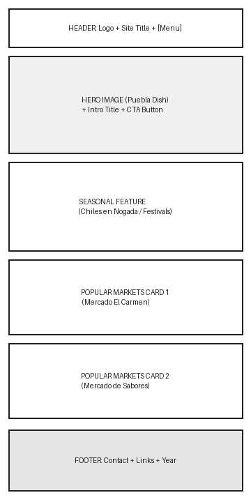
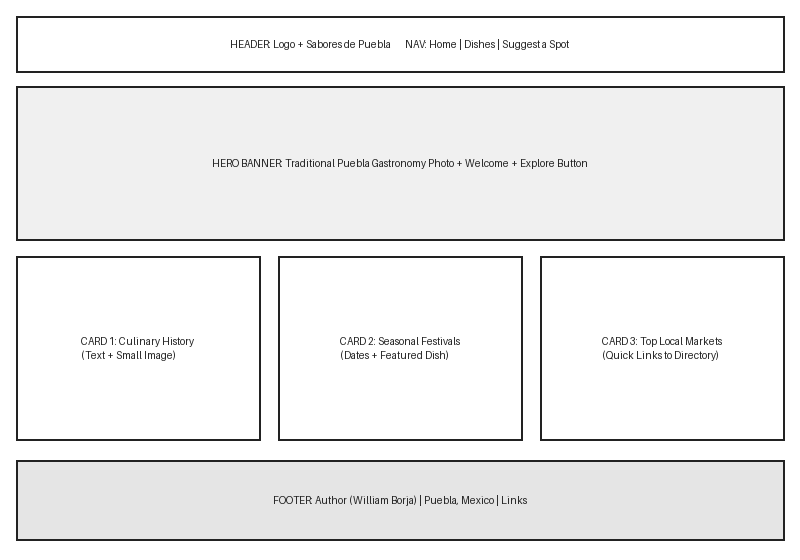

1. Site Name
Site Name: Sabores de Puebla
Optional Domain: saboresdepuebla.mx
I picked the name Sabores de Puebla because it is simple and connects directly to the traditional food from my city in Mexico. Visitors and friends can remember it easily when they want to look up classic local dishes.
2. Site Purpose
This website will work as a three-page guide to traditional food and local places to eat in Puebla. The Home page will introduce local food history and seasonal dishes, the Dishes page will load a JSON list of classic meals with category filters and modal details, and the Suggest a Spot page will include a form where people can share a good fonda or taqueria and save favorite dishes in localStorage.
3. Scenarios
- Where can I find traditional Mole Poblano or Cemitas in Puebla, and how much do they usually cost?
- When are seasonal dishes like Chiles en Nogada available during the year?
- How can I save a list of dishes I want to try or suggest my favorite neighborhood fonda?
4. Color Schema
I selected three main colors inspired by Puebla Talavera pottery and clay cookware, along with dark text (#222222) and white cards (#FFFFFF) for clear contrast:
Used for the header, footer, main headings, and card borders.
Used for header bottom accent, preview borders, and image labels.
Used for the page background, header subtitle text, and preview boxes.
5. Typography
I chose two Google Fonts so headings and body text stay clear and easy to read:
- Merriweather (700 Bold): Used for main headings (
h1,h2) and sample heading text. - Roboto (400 Regular and 700 Bold): Used for body paragraphs, lists, captions, and labels.
Heading Sample: Traditional Mole Poblano
Body Sample: Made with roasted chilies, spices, and dark chocolate, Mole Poblano is one of the best known dishes in Puebla.
6. Wireframes
Simple black and white sketches showing the home page layout on mobile and desktop screens:

